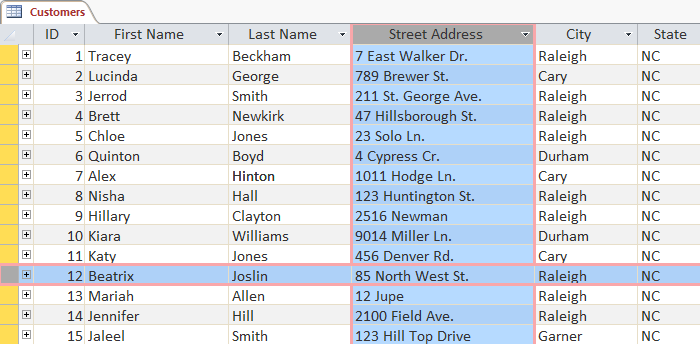
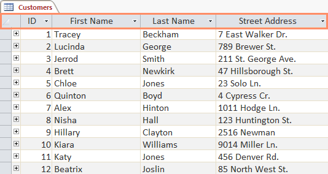
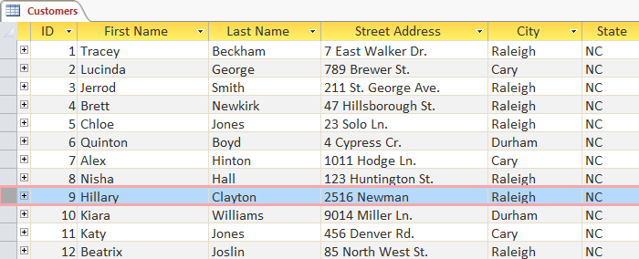
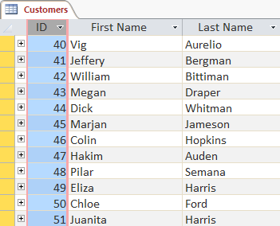
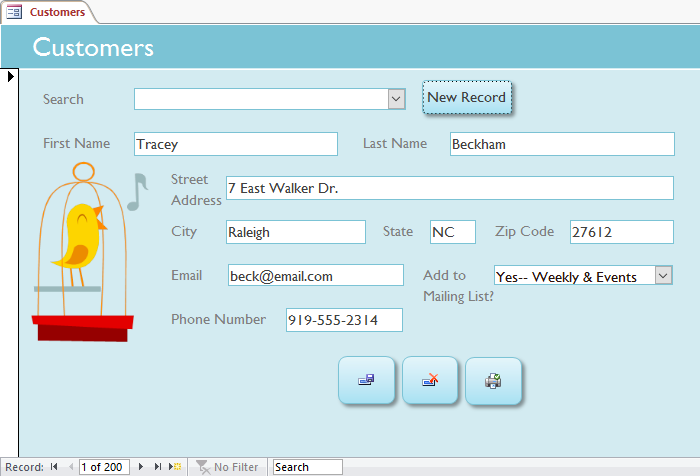
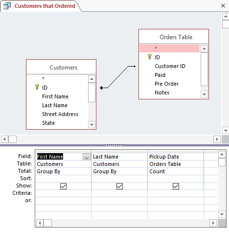
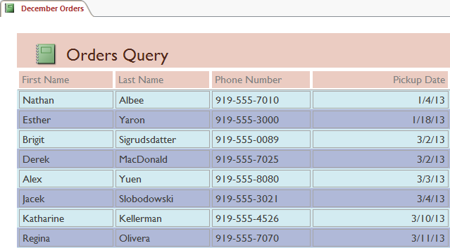
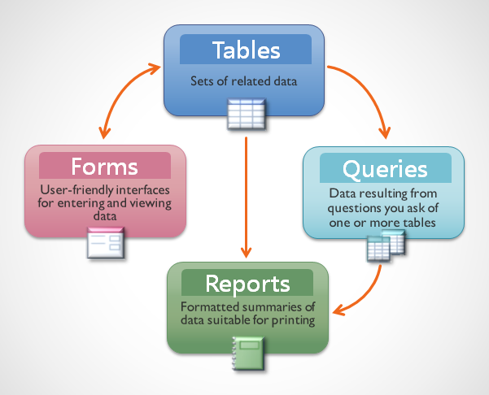
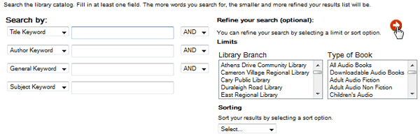
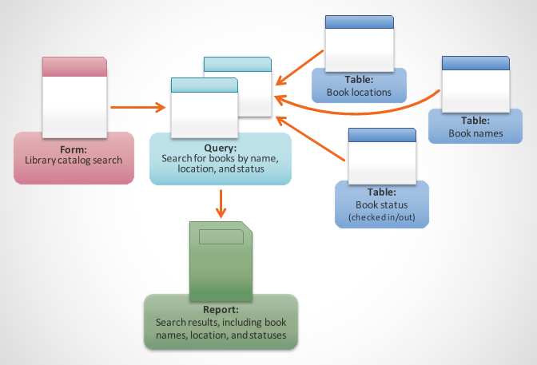

Bazele de date din Access sunt compuse din patru obiecte: tabele, interogări, formulare și rapoarte. Împreună, aceste obiecte vă permit să introduceți, să stocați, să analizați și să compilați date așa cum doriți.
În această lecție, veți afla despre fiecare dintre cele patru obiecte și veți ajunge să înțelegeți cum interacționează între ele pentru a crea o bază de date relațională complet funcțională.
TabeleÎn acest moment, ar trebui să înțelegeți deja că o bază de date este o colecție de date organizată în mai multe liste conectate. În Access, toate datele sunt stocate în tabele, ceea ce înseamnă că tabelele sunt inima oricărei baze de date.
De asemenea, s-ar putea să știți deja că tabelele sunt organizate în coloane verticale și rânduri orizontale.

În Access, rândurile și coloanele sunt denumite înregistrări și câmpuri. Un câmp este mai mult decât o coloană; este o modalitate de organizare a informațiilor după tipul de date care sunt. Fiecare informație dintr-un câmp este de același tip. De exemplu, fiecare intrare dintr-un câmp numit Prenume ar fi un nume, iar fiecare intrare din câmp numit Adresă stradală ar fi o adresă.

La fel, o înregistrare este mai mult decât un simplu rând; este o unitate de informare. Fiecare celulă dintr-un rând dat face parte din înregistrarea acelui rând.

Observați cum fiecare înregistrare se întinde pe mai multe câmpuri. Chiar dacă informațiile din fiecare înregistrare sunt organizate în câmpuri, acestea aparțin celorlalte informații din înregistrarea respectivă. Vedeți numărul din stânga fiecărui rând? Este numărul de identificare care identifică fiecare înregistrare. Numărul de identificare pentru o înregistrare se referă la fiecare informație conținută pe acel rând.

Tabelele sunt bune pentru stocarea informațiilor strâns legate. Să presupunem că dețineți o brutărie și aveți o bază de date care include un tabel cu numele și informațiile clienților dvs., cum ar fi numerele de telefon, adresele de domiciliu și adresele de e-mail ale acestora. Deoarece aceste informații sunt toate detalii despre clienții dvs., le veți include pe toate în același tabel. Fiecare client ar fi reprezentat de o înregistrare unică, iar fiecare tip de informații despre acești clienți ar fi stocat în propriul său câmp. Dacă ați decide să adăugați mai multe informații, de exemplu, ziua de naștere a unui client, ați crea pur și simplu un câmp nou în același tabel.
Formulare, interogări și rapoarteDeși tabelele stochează toate datele dvs., celelalte trei obiecte - formulare, interogări și rapoarte - vă oferă modalități de a lucra cu acestea. Fiecare dintre aceste obiecte interacționează cu înregistrările stocate în tabelele bazei de date.
FormulareFormularele sunt folosite pentru introducerea , modificarea și vizualizarea înregistrărilor. Probabil ați fost nevoit să completați formulare în multe ocazii, cum ar fi când vizitați un cabinet medical, aplicați pentru un loc de muncă sau vă înregistrați la școală. Motivul pentru care formularele sunt folosite atât de des este că sunt o modalitate ușoară de a ghida oamenii spre introducerea corectă a datelor. Când introduceți informații într-un formular în Access, datele merg exact unde dorește proiectantul bazei de date: într-unul sau mai multe tabele înrudite.

Formularele facilitează introducerea datelor. Lucrul cu tabele extinse poate fi confuz și, atunci când aveți tabele conectate, este posibil să fie necesar să lucrați cu mai multe odată pentru a introduce un set de date. Cu toate acestea, cu formulare este posibil să introduceți date în mai multe tabele simultan, toate într-un singur loc. Designerii de baze de date pot chiar să stabilească restricții asupra componentelor individuale ale formularului pentru a se asigura că toate datele necesare sunt introduse în formatul corect. Una peste alta, formularele ajută la menținerea datelor consistente și organizate, ceea ce este esențial pentru o bază de date precisă și puternică.
Excel ar trata toate aceste lucruri ca informații distincte și fără legătură. În Excel, ar trebui să introduceți fiecare informație despre o persoană sau un tip de cookie de fiecare dată când l-ați menționat, deoarece acea bază de date nu ar fi relațională ca o bază de date Access. Mai simplu spus, bazele de date relaționale pot recunoaște ceea ce poate un om: dacă aceleași cuvinte apar în mai multe liste, se referă la același lucru.
InterogăriInterogările reprezintă o modalitate de căutare și compilare a datelor dintr-unul sau mai multe tabele. Rularea unei interogări este ca și cum ai pune o întrebare detaliată a bazei de date. Când creați o interogare în Access, definiți condiții specifice de căutare pentru a găsi exact datele pe care le doriți.
Interogările sunt mult mai puternice decât căutările simple pe care le puteți efectua într-un tabel. În timp ce o căutare ar putea să vă ajute să găsiți numele unui client la compania dvs., puteți rula o interogare pentru a găsi numele și numărul de telefon al fiecărui client care a făcut o achiziție în ultima săptămână. O interogare bine concepută poate oferi informații pe care s-ar putea să nu le puteți găsi doar privind datele din tabelele dvs.

RapoarteRapoartele vă oferă posibilitatea de a vă prezenta datele în format tipărit. Dacă ați primit vreodată o imprimare de computer a unui program de curs sau o factură tipărită a unei achiziții, ați văzut un raport al bazei de date. Rapoartele sunt utile deoarece vă permit să prezentați componentele bazei de date într-un format ușor de citit. Puteți chiar să personalizați aspectul unui raport pentru a-l face atrăgător din punct de vedere vizual. Access vă oferă posibilitatea de a crea un raport din orice tabel sau interogare.

Punând totul împreunăChiar dacă aveți o idee bună despre cum poate fi folosit fiecare obiect, poate fi inițial dificil să înțelegeți cum funcționează toate împreună. Este util să ne amintim că toate lucrează cu aceleași date. Fiecare parte de date folosită de o interogare, formular sau raport este stocată într-unul dintre tabelele bazei de date.

Formularele vă permit atât să adăugați date în tabele, cât și să vizualizați datele care există deja. Rapoartele prezintă date din tabele și, de asemenea, din interogări, care apoi caută și analizează date în aceleași tabele.
Aceste relații sună complicate, dar, de fapt, funcționează atât de bine și de natural, încât adesea nici nu observăm când folosim obiecte de baze de date conectate. Ați folosit vreodată un catalog electronic de carduri pentru a căuta o carte la bibliotecă? Sunt șanse să fi introdus căutarea în ceva care arată astfel:

Când ați efectuat căutarea, introduceți termenii dvs. de căutare într-un formular care apoi a creat și a rulat o interogare pe baza solicitării dvs. Când interogarea a terminat de căutat în tabelele bazei de date pentru înregistrări care se potriveau căutării dvs., vi s-a afișat un raport care a extras informații din interogare și din tabelele aferente — în acest caz, o listă de cărți care corespund termenilor dvs. de căutare. Puteți reprezenta conexiunile dintre obiecte astfel:

Să presupunem că, în loc să utilizați aceste instrumente, a trebuit să căutați într-un tabel uriaș care conține fiecare carte din sistemul bibliotecii. Înregistrările relevante ar fi probabil răspândite în mai multe tabele: un tabel pentru titlurile și descrierile cărților, un tabel care conține informații despre cărțile sunt preluate sau scoase și un tabel cu fiecare ramură a bibliotecii, pentru a numi doar câteva.
Ar trebui să căutați în cel puțin trei tabele doar pentru a găsi o carte, pentru a afla locația ei și pentru a vedea dacă este înregistrată! Este ușor de imaginat cât de dificil ar putea fi să găsești cartea potrivită. Dacă nu ai fost atent, ai putea chiar să dai peste cap ceva ștergând sau editând accidental o înregistrare. Este ușor de văzut cum obiectele bazei de date fac această căutare mult mai ușor de gestionat.